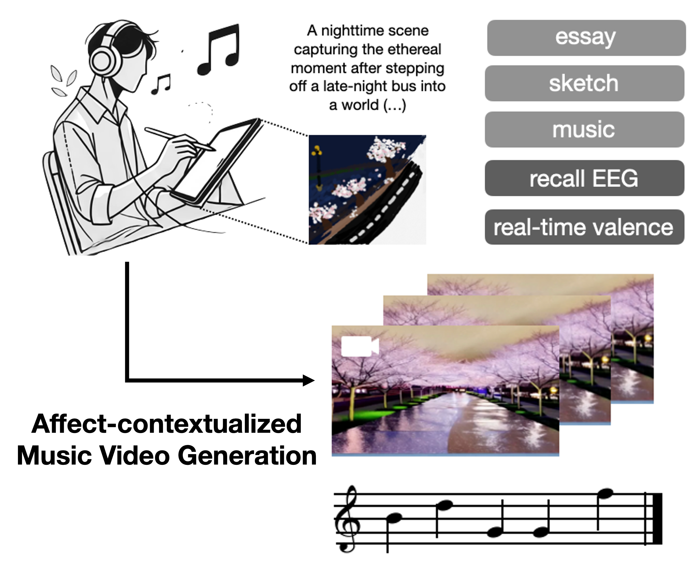
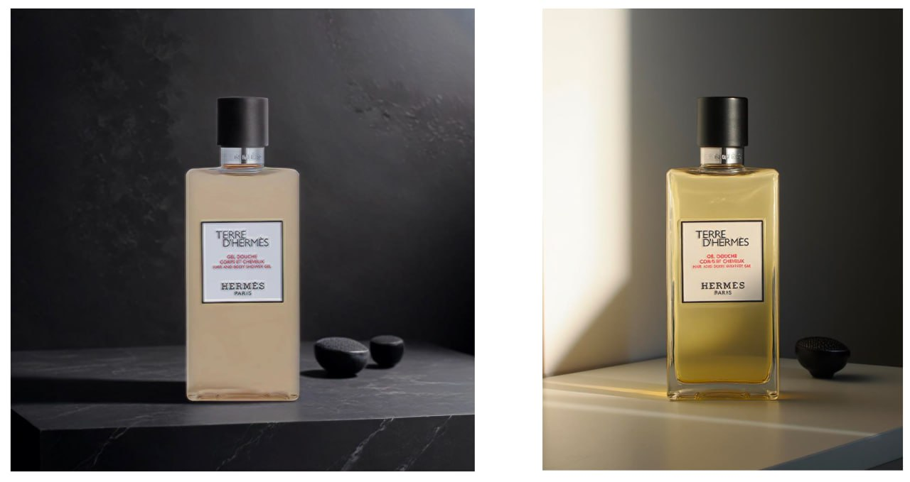
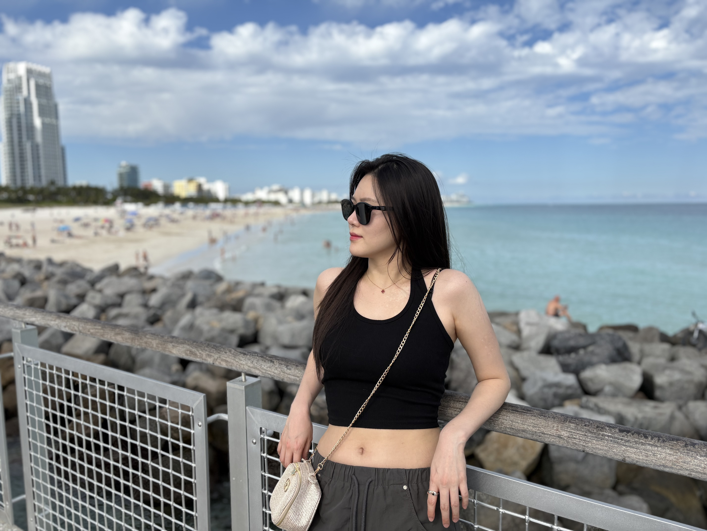

Research Statement
My research interests lie in Computer Vision, Generative AI, and Human-AI.
My research focuses on understanding and generating images, videos, and 3D/4D content, with an emphasis on narrative-driven multimedia such as movies.
Ultimately, I aim to build AI systems that can understand and interact with the physical world.
- Physical Scene Understanding — modeling physical principles of the real world without supervision to pervceive visual, semantic, intuitive physical representation.
- Spatially Coherent Generation — achieving visually coherent long-horizon video and 3D geometry under human interaction.
|
News🗞️
🔥 (Jan. 2025) Invited as a reviewer from CVPR and ECCV 2026.
🔥 (Sep. 2025) I started PhD at Rutgers University!
🔥 (Aug. 2025) Our paper, Revisiting Your Memory, is accepted for the Oral Paper at ACM Multimedia 2025 - CogMAEC Workshop.
🔥 (Jul. 2025) Invited as a reviewer from Computers in Industry.
🔥 (Feb. 2025) Invited as a reviewer from Pattern Recognition and IEEE Computational Intelligence Magazine.
🔥 (Oct. 2024) Our team won the Grand Prize at the AI & Art Hackathon and presented the work at the ART DIFFUSION, SNU MoA.
|
Education
Rutgers University
Sep. 2025 - Present
Ph.D. in Computer Science (Advisor: Vladimir Pavlovic)
Seoul National University
Mar. 2021 - Aug. 2023
M.S. in Brain and Cognitive Sciences (Advisor: Jiook Cha)
Ewha Womans University
Mar. 2017 - Feb. 2021
B.S. in Computer Science and Engineering
|
|
|
Repurposing Stable Diffusion For Training-Free Music Style Transfer on Mel-Spectrograms
H. Wang*, J. Kwon*, S. Kim*, J. Seo, S. Yoo, Y. Lin and J. Cha
arXiv, 2025
[paper]
|
|
|
Macro2Micro: Cross-modal Magnetic Resonance Imaging Synthesis Leveraging Multi-scale Brain Structures
S. Kim*, J. Kwon*, J. Kwon*, J. Min, S. Bae,
S. Yoo, Y. Lin and J. Cha
arXiv, 2024
[paper]
|
|

|
Revisiting Your Memory: Reconstruction of Affect-Contextualized Memory via EEG-guided Audiovisual Generation
J. Kwon*, H. Wang*, J. Yi*, S. Kim*,
S. Yoo, Y. Lin and J. Cha
ACM MM CogMAEC 2025 (CogMAEC), Oral Presentation
[paper]
|
|
|
AesFA: An Aesthetic Feature-Aware Arbitrary Neural Style Transfer
J. Kwon*, S. Kim*, S. Yoo, Y. Lin and J. Cha
AAAI 2024,
[project page][paper]
|
Manuscript in Preparation
|
|

|
An Instance-Adaptive Photorealistic Style Optimization for Commercial Image Harmonization
S. Kim*, J. Kwon*, J. Shin, J. Cha and S. Kim
|
|
|
Compositional Brain Decoding from Symbolic Representations in the Hierarchical Visual System
S. Kim*, J. Kwon*, H. Wang, J. Kwon,
M. Park, S. Yoo, Y. Lin, V. Pavlovic, Z. Cui and J. Cha
|
|
|
A Viscosity-guided Artistic Style Optimization via Brushstroke Parameterization
J. Kwon*, S. Kim*, S. Lee, S. Yoo, Y. Lin and J. Cha
|
Peer Review
Conference
ECCV 2026, CVPR 2026
Journal
Pattern Recognition, Computers in Industry, IEEE Computational Intelligence Magazine
|
Honors & Awards
Grand Prize at AI x Art Hackathon, Oct 2024
BrainKorea21 Four Scholarship, 2021–2022
2020 4th Seoul Innovation Challenge, Jan 2020 – Sep 2020
The 9th Ewha Festival for Business Plan, Mar 2019 – Dec 2019
EWHA Scholarship, 2018-2020
EWHA Merit-Based Scholarship (full tuition) - Awarded to the top 10% of students upon admission, 2017
|
|

|
I like swimming a lot, as my first name "수영; Sooyoung" sounds the same as "swimming" in Korean.
I also love movies and dramas with dynamic stories, I am especially a big fan of The Good Place, Brooklyn Nine-Nine, and Harry Potter series. I really love both discussing movie interpretations and imagining alternative movie endings with other people.
|
|
|
I love whales. If I could choose my next life, I would want to be a whale, freely swimming through the ocean, unbounded and at peace.
The “451” in my link comes from Fahrenheit 451, the temperature at which paper burns. It marks the point where ideas are meant to disappear, and reflects my desire to keep exploring beyond that point, without being confined to a single way of thought.
|
|